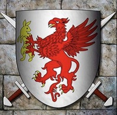

130816792190 Greve Heinrich II von Formbach
Greve av Formbach. Blev ca 50 år.

Far:
Född:
omkring 1040 Quinzigau, Tyskland. [1]
Död:
1090 Formbach, Tyskland. [1]
Barn:
Personhistoria
1040?
Födelse omkring 1040 Quinzigau, Tyskland
[1]
1090
Död 1090 Formbach, Tyskland
[1]
Källor